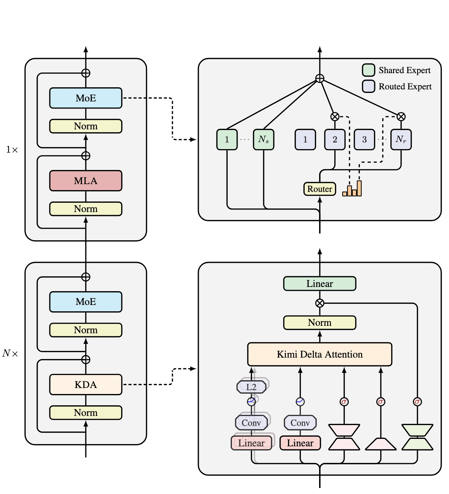
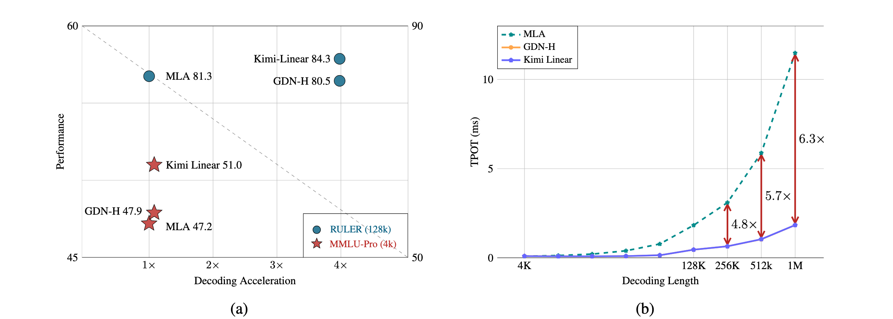

00全景与读法
到 K3 为止，本看板追踪的旗舰级"注意力降本"路线集齐四条：MiniMax MSA（D04）、GLM-5.2 DSA + IndexShare（D06）、LongCat-2.0 LSA（D21）都是稀疏化全注意力——保留 softmax 的计算形式，只挑部分 token 参与；K3 是唯一改掉状态更新方程本身的厂商。首发时全部机理判断以官方博客口径 + Kimi Linear 论文（arXiv 2510.26692）外推为准；08-10 技术报告（arXiv 2607.24653，47 页）与权重同时落地，首发核对清单全部过账，且额外给 D25 / D26 / D27 三条主线各补了一块生产级证据。
每一节固定三段：朴素基线（左栏，灰：不看论文时的直觉实现）/ K3 的做法（右栏，橙）/ 差在哪（下方色块：差异、原文是否给了理由、对 RL-on-NPU 的含义）。数字按来源标注：自报 官方博客或技术报告口径（评测分数为厂商自评 harness）、第三方 独立来源、推断 本站分析。首发时的 provisional 数字，若报告已确认则按报告口径写出；仍未确认的保留限定语。
贯穿全文的一条线索：线性注意力省下的成本，只有在 RL 范式下质量不失效时才对训练闭环有意义。D02 说明 rollout 占 RL 单步 wall-clock 70% 以上且 decode-bound，KDA 的 KV 减省与解码提速恰好命中这一痛点；而 Kimi Linear 论文的 RL scaling 主张，是"线性注意力能进 RL 训练"迄今最直接的证据。
01发布了什么：事实清单
2026 年 7 月 16 日，月之暗面（Moonshot AI）发布 Kimi K3（官方 tech blog：kimi.com/blog/kimi-k3）。公开口径的事实：2.8T 总参数，极稀疏 MoE——每 token 激活 16/896 个 routed experts，外加 shared experts（"Stable LatentMoE"层）；架构四件套 KDA + AttnRes + Gated MLA + Stable LatentMoE；原生视觉理解、1M token 上下文；KDA 在 1M 上下文下解码提速至多 6.3×（自报）；六项 benchmark（自报）：DeepSWE 67.5、FrontierSWE 81.2、Kimi Code Bench 2.0（内部）72.9、Terminal-Bench 2.1 88.3、Program Bench 77.8、SWE Marathon 42.0；定价 $3 / $15 每百万 token（输入/输出），对标 Claude Sonnet 价位档，API 已可用；权重承诺 2026-07-27 前放出，厂商主张这将是"3 万亿参数级的首个开源模型"；定位长程 coding、知识工作、推理。首发时官方未给出激活参数量的单一数字，原文明确拒绝引用第三方推算值。

这张图怎么读
看主链四个节点之间的时间间隔：论文到旗舰发布是九个月，发布到权重承诺是 11 天，权重到技术报告在首发时没有日期。九个月是 Kimi 相对其他厂商的验证期（第 04 节）；11 天是"3 万亿级首个开源"这一主张的兑现窗口。
两条虚线是首发解读给自己划的边界：T3 → N1 提醒"承诺不等于交付"，但 LongCat 最终兑现了 MIT 权重，属于良性先例；T4 → N2 提醒所有数字在报告落地前按 provisional 处理。回看 08-10 的跟进（第 08 节），两个观察点都已闭合：权重开源兑现，报告 47 页落地。
朴素基线
旗舰发布即以官方博客的 benchmark 数字与参数规模为准，把第三方推算的激活参数量当作事实引用，把"将开源"当作"已开源"。
K3 的做法 / 原文的处理
官方博客只给总参 2.8T、16/896 路由与四个组件名，激活参数量无单一数字；六项 benchmark 全为新一代名目。原文的处理是：数字全部标 provisional，激活量拒绝引用第三方推算，权重承诺标注为"尚未兑现"，与 D21 处理 LongCat-2.0 的方式一致。
差在哪差别在把"官方口径"与"已确认事实"分层。这一分层在 08-10 得到回报：激活参数量报告给出 104.2B（总参 2.78T），任何首发时引用的第三方推算都会与之不符；六项 benchmark 报告仍是厂商自评 harness，但披露了 harness、温度与 top-p，可复现性比博客口径强一档。事实清单本身的核心看点没有变：这是线性注意力第一次进入开源旗舰级模型的主力架构。
02KDA 谱系：从 delta rule 到旗舰落地
K3 选择 KDA 有一条清晰的谱系，落点是 2025 年 10 月的 Kimi Linear 论文（arXiv 2510.26692），配套开源 Kimi-Linear-48B-A3B-Instruct（HF 可下载）。递进链是 delta rule → Gated DeltaNet → KDA：经典线性注意力把上下文压进固定大小的矩阵状态 S，每步做 S ← S + v·kᵀ 式累加，只增不删，状态被旧信息污染；delta rule 改为"先擦后写"——用当前 key 检索出旧关联、减去、再写入新关联，对固定容量的记忆做定向覆写；Gated DeltaNet 加遗忘门，每 head 一个标量 α 控制整个状态矩阵的衰减速率，但粒度太粗；KDA 把门控做到 channel-wise——每个特征维度有独立遗忘率，追踪局部句法的维度可快速遗忘，保持长程绑定（如变量名与定义的关联）的维度可缓慢遗忘。代价是计算结构更复杂，所以 KDA 的另一半贡献是硬件高效的 chunkwise 算法：序列切块，块内矩阵乘并行、块间递推传递状态。

这张图怎么读
先看左列的 N× 与 1×：这就是"每 N 层 KDA 配 1 层 MLA"的混合堆叠，Kimi Linear 消融给出的 N = 3；K3 报告确认沿用（93 层 = 69 KDA + 24 MLA）。KDA 块与 MLA 块除注意力层外结构完全相同——MoE、Norm、残差一致——说明混合的代价只在注意力子层，其余训练系统无需为两种层分别处理。
再看右下 KDA 内部最值得注意的三个沙漏形低秩分支（带 σ 符号）：这是门控信号的来源，其中承载 channel-wise 遗忘率的门以低秩投影 + sigmoid 生成，这是 KDA 与 Gated DeltaNet 的差别在电路图上的位置——后者每 head 只需一个标量。q/k 路径末端的 L2 归一化与 v 路径的 Conv 是 delta rule 数值稳定所需的常规构件。右上 MoE 中 Router 旁的小柱状图表示路由权重分布，K3 的 16/896 极稀疏路由（第 05 节）作用在同一位置。
朴素基线
线性注意力 = 固定状态矩阵累加，或至多加一个每 head 标量遗忘门（Gated DeltaNet）；训练时按 token 递推，吞吐受 recurrent 结构拖累。
K3 的做法
门控做到每特征维度独立（channel-wise），让记忆的每个存储位分别决定保留多久；配套 chunkwise 算法把计算主体组织成块内稠密矩阵乘。谱系来自 Kimi Linear 论文，K3 沿用并升格为 2.78T 旗舰主力层。
差在哪从"整块记忆统一衰减速率"到"逐维精细记忆管理"是质的跨越，原文用变量名与定义绑定的例子给出了直觉理由，但精细门控的收益在多大程度上依赖 chunkwise 算法的效率，论文层面的消融原文未转述。对 RL-on-NPU 的直接含义在第 07 节：chunkwise 块内矩阵乘是 NPU cube 单元最擅长的形态，但 KDA 是新算子，CANN 生态中大概率没有现成实现（推断）。
033:1 混合与 NoPE 分工
Kimi Linear 不是纯线性：每 3 层 KDA 配 1 层全注意力 MLA，消融显示 3:1 是吞吐 × 验证损失的最优点。更精巧的是分工：MLA 层用 NoPE（无位置编码），位置信息和 recency bias 全部交给 KDA 层承担——KDA 的逐维遗忘门天然是一种数据依赖的位置衰减机制，全注意力层被解放出来做纯内容寻址的精确检索。工程收益：KV cache 至多减 75%（只有 1/4 的层需要 KV cache），1M 上下文解码吞吐至多 6×。论文最重的一条主张是三范式：短上下文、长上下文、RL scaling 三种范式下混合线性架构全都不输甚至超过全注意力基线——第三条是关键增量。从 48B-A3B 到 2.8T 规模跨约 60 倍，3:1 配比是否仍最优、KDA 是否有版本改动、MLA 是否仍是 NoPE，首发时全部待报告确认。

这张图怎么读
(a) 面板要读左上到右下的对角虚线：它代表"加速多少就掉多少分"的等价交换线。MLA 落在 1× 处（RULER 81.3，MMLU-Pro 47.2），Kimi Linear 与 GDN-H 落在约 4× 处，但两者的 RULER 圆点（84.3 与 80.5）都在虚线之上——即加速没有以长上下文检索质量为代价；MMLU-Pro 星形三者都在 1× 附近（51.0 / 47.9 / 47.2），短上下文 4k 下没有加速也没有掉分。这正是原文"短上下文、长上下文两范式不输"的图形表述。
(b) 面板要读曲线的形状差而非单点：MLA 的 TPOT 随解码长度加速上升（KV cache 线性增长导致每 token 读取量增长），Kimi Linear 近乎平缓（3/4 的层状态大小与长度无关）。三个红色箭头的比值 4.8× → 5.7× → 6.3× 随长度单调增大，说明差距会随上下文继续拉开。注意 K3 博客的"1M 解码至多 6.3×"与此图 1M 处的标注一致，即该数字沿用了 Kimi Linear 的口径；且 GDN-H 曲线在图例中但与 Kimi Linear 重叠，不可见。RL scaling 范式不在这张图里，原文强调它是三范式中最关键的一条，证据在论文正文而非 README。
朴素基线
全部层替换为线性注意力以最大化省 KV；或者混合时每层都带 RoPE，线性层与全注意力层各自独立处理位置信息。
K3 的做法
3:1 混合（吞吐 × 验证损失最优点），MLA 层 NoPE，位置信息完全由 KDA 递归门控与衰减隐式承载；报告确认 K3 保留 3:1、保留 NoPE，并以此实现 1M 上下文零位置编码修改直接外推（渐进课程：预训练 8K → 64K，cooldown 256K → 1M）。
差在哪差别是分工而非冗余：两种层各承担所长——线性层承担位置与 recency，全注意力层做纯内容寻址。原文给出了 3:1 的消融依据（Kimi Linear 论文口径），但"2.8T 尺度有无重新消融"报告未见转述。对 RL 的含义：KV cache 至多减 75% 对应同显存下 rollout batch 翻倍以上的空间；三范式中的 RL scaling 主张是线性架构能进训练闭环的前提，K3 定位"长程 coding + 推理"等于在旗舰尺度上验证这条主张。
04四条注意力路线的分岔口
本看板追踪的旗舰级注意力降本路线已集齐四条：MSA（MiniMax-M3，D04）、DSA + IndexShare（GLM-5.2，索引器每 4 层复用，D06）、LSA（SI / CLI / HI，LongCat-2.0，D21）与 KDA 混合（Kimi K3）。前三家的共同哲学是保留 softmax attention 的计算形式，只选择部分 token 参与计算——注意力矩阵还是那个矩阵，只是变稀疏；KV cache 还在，只是访问模式变了，failure mode 与全注意力连续。Kimi 走的是改掉状态更新方程本身：KDA 层没有 KV cache，只有固定大小的矩阵状态，信息必须有损压缩进固定容量，靠遗忘门决定留什么，换来 KDA 层解码每 token 成本与上下文长度无关。
| 路线 | 代表 | 哲学 | KV cache |
|---|---|---|---|
| MSA | MiniMax-M3（D04） | 稀疏化全注意力 | 仍在，被裁剪 |
| DSA + IndexShare | GLM-5.2，索引器每 4 层复用（D06） | 稀疏化全注意力 | 仍在，被索引 |
| LSA（SI / CLI / HI） | LongCat-2.0（D21） | 稀疏化全注意力 | 仍在，分层稀疏 |
| KDA 混合 | Kimi K3 | 线性注意力 | KDA 层无 KV cache——3:1 配比下即 3/4 的层（报告已确认沿用 3:1） |

这张图怎么读
要读的是上下两栏之间只有一条虚线——K3 是唯一把线性注意力升格进旗舰的模型，其他三家彼此以实线相连（同一哲学的三种实现）。上栏 L2 → L3 的边标"细粒度化"，L4 → L5 标"升格进旗舰"，这两条边是谱系里的两次跃迁：前者是算法层的，后者是规模层的（约 60 倍）。
下栏 S1 的注释是全图最重要的反面证据：MiniMax 在 M1 用过 lightning attention 线性路线，后来在 M3 转回稀疏化。这说明"线性路线在旗舰上是否成立"此前有过否定先例；Kimi 与其他厂商的区别不在想法，而在九个月的验证期——L4 节点（开源 48B 模型）是这一验证期的实物证据。48B 的验证能否覆盖 2.8T 的风险面，是首发时最大的不确定性来源。
朴素基线
降本就在全注意力内部做：裁剪、索引、分层稀疏，保守可控，任何 token 理论上仍可被精确检索。业界多数厂商选此路径，且线性路线有 M1 → M3 的回退先例。
K3 的做法
替换状态更新方程：KDA 层固定容量、有损压缩、遗忘门决定保留内容；用九个月（2025-10 论文 + 开源 48B → 2026-07 K3）在真实训练管线里验证与试错后再上旗舰。
差在哪本质差异是"存储全量、选择性读取"与"边读边压缩、只保留摘要"。原文给出 Kimi 敢采用的两点理由：业界对线性架构精确检索、长程 recall 天花板与 RL 稳定性的普遍担心，Kimi 以验证期作答；其他厂商缺少验证积累。对 RL-on-NPU：稀疏路线的不规则 gather / scatter 访存恰是 D06 讨论 DSA 时的落地痛点，线性路线的块内稠密矩阵乘在形态上更友好（推断），但代价是算子生态空白。
05AttnRes 与 Stable LatentMoE：两个首发时只有名字的组件
AttnRes（Attention Residuals）官方口径：让某层选择性检索更早深度的表征，而非以同样方式累积所有先前状态——改变信息沿模型深度的流动。首发时的推断（推断）：标准 residual stream 逐层累加，深层若需某个浅层的特定表征只能依赖其未被稀释；AttnRes 把"被动累加"改为"主动检索"，类似在深度方向做注意力 / 门控选择，对超深模型的梯度传播与特征复用有意义，并可能与 KDA 层的有损压缩互补。Stable LatentMoE：16/896 路由，激活比约 1.8%，加 shared experts 兜底。这一稀疏度放大三类难题：专家负载均衡、路由早期塌缩风险、训推一致——D23 讨论过，专家数越多、选择越稀疏，同样大小的 logit 扰动越容易翻转 top-k 边界上的专家。"Stable"与"Latent"暗示某种稳定化路由（推断）。报告落地后的答案见第 08 节。

这张图怎么读
这张图的价值在于三条虚线指向的三个空白：AttnRes 机理、KDA 与 MLA 配比、激活参数量。它们是首发解读给自己留的核对清单，也是衡量首发判断对错的刻度。对照第 08 节：三项分别被报告回答为"伪查询对 embedding 与所有前序 block 输出计算注意力权重"、"保留 3:1，93 层 = 69 + 24"、"104.2B"。
结构上注意 AttnRes 的边是从 A2 直接接入 MIX，而不是与 KDA / MLA 并列——它不是第三种注意力层，而是作用在深度方向的连接方式，与作用在序列方向的 KDA / MLA 正交。首发时"线性层压缩丢失的细节或可由浅层残差补回"的互补猜想，正是基于这一正交关系提出的，报告是否给出互补设计的证据原文未转述。
朴素基线
标准 residual stream：第 N 层看到前面所有层输出的和；MoE 用常规 top-k 路由 + 辅助负载均衡损失，专家数在 64–256 量级。
K3 的做法
AttnRes：学习到的伪查询（pseudo-queries）对 embedding 与所有前序 block 输出计算注意力权重，跨深度选择性检索，推理时配两阶段 Block AttnRes kernel（报告口径）。MoE：896 个 routed experts 中激活 16 个，加 shared experts；报告披露负载均衡用 Quantile Balancing。
差在哪AttnRes 把残差流从"被动累加"改为"主动检索"，首发的定性猜想方向正确，报告给出了形式（伪查询注意力）但原文未转述其消融收益。16/896 极稀疏是 K3 训推一致风险的放大器：路由翻转敏感性叠加线性注意力的双算子数值差异（第 07 节），本站判断 K3 的训推一致工程难度可能是本看板追踪过的模型里最高的一档（推断）。报告对此的回应是 MXFP4 QAT 让 rollout 与训练共用同一量化方案（第 09 节 ①）。
06评测分数与定价怎么读
评测的三重折扣：其一，六项 benchmark 全部厂商自报、provisional、无第三方复现；其二，FrontierSWE、DeepSWE、SWE Marathon、Program Bench 是新一代基准体系，与旧 SWE-bench Verified 不可跨表比较，Kimi Code Bench 2.0 为内部基准；其三，跨厂商不可比——D21 里 LongCat-2.0 自报 SWE Pro 59.5 与 K3 的 FrontierSWE 81.2 / DeepSWE 67.5 属不同分数体系，任何"K3 比 LongCat 高 X 分"都是错误比较。能读出的可靠信号只有一个：六项全是 coding / agentic 长程任务，配合 SWE Marathon 42.0 这种主动公布偏低分数的做法，官方叙事重心是长程 agent 工作负载。定价 $3 / $15 对标 Claude Sonnet 档而非折价：定价即定位；更重要的是成本结构——若 75% KV 减省与 6.3× 长上下文解码提速在生产 serving 中兑现，同样标价下长上下文请求的毛利结构会显著优于全注意力同行。
朴素基线
把新基准分数与旧 SWE-bench Verified 或其他厂商自报数字并排比较；把定价解读为单纯的市场竞争信号。
K3 的做法 / 原文的读法
六项分数只用于判断叙事重心（长程 agent），不做跨表、跨厂商比较；定价读作架构红利向商业面的传导——线性注意力的成本优势可以选择不降价、转化为利润率或留作价格竞争空间。报告落地后自评口径：整体落后 Claude Fable 5 与 GPT-5.6 Sol，稳定领先其余开源与闭源模型（自报）。
差在哪差别在把分数当叙事线索而非能力刻度。原文给了三重折扣的完整理由，且引用 D21"新基准名目无锚点"的教训。"3 万亿级首个开源"在首发时是尚未兑现的厂商主张，07-27 是验证点；D21 记录的 LongCat 先承诺后交付属良性先例。是否放出、是否完整权重、许可证是什么，三问在首发时无答案——报告落地后前两问已闭合（"We release the full Kimi K3 model weights"），许可证条款原文未转述。
07对 RL-on-NPU 的含义
KDA 精准打在 rollout 痛点上。D02 的结论：RL 单步 wall-clock 里 rollout 占 70% 以上且 decode-bound；长上下文 rollout 的显存主宰是 KV cache——batch size 被 KV cache 卡死，decode 吞吐决定整个 RL 迭代速度。逐项对照：KV cache 至多减 75%（同显存下 rollout batch 翻倍以上的空间），1M 解码至多 6.3×（自报，直接压缩 rollout wall-clock）。即便按七成兑现，对长程 agentic RL 的训练经济学也是结构性改善；再叠加 Kimi Linear 的 RL scaling 主张，推理降本与 RL 可训练两方面都有论文背书。NPU 亲和性（推断）：chunkwise 算法的块内稠密矩阵乘是 NPU cube 单元最擅长的形态，比稀疏注意力的不规则 gather / scatter 友好得多；但 KDA 是新算子，chunkwise 训练 kernel 与逐 token recurrent 解码 kernel 在 CANN 生态里大概率都没有现成实现，CUDA 侧至少有 Kimi Linear 开源实现可参考。新的训推一致风险面（推断，承 D23）：训练 / prefill 走 chunkwise 并行算子，解码走逐 token recurrent 算子，两者数学等价、浮点不等价；误差沿固定大小状态逐 token 累积，序列越长（上限 1M）漂移越远，是 rollout 分布与训练分布的系统性偏差来源。

这张图怎么读
链条的每一个箭头对应一个可核对的数字来源：R1 → R2 来自 D02 的测量，R3 的两个数字分别来自论文（−75%）与 K3 自报（6.3×），R5 来自 Kimi Linear 论文。R4 是这条链上唯一没有直接测量支撑的节点——它是前三者的推论，"按七成兑现也是结构性改善"是原文对推论的保守折算。
最值得看的是 R4 → X1 的虚线"代价与风险"：收益与风险源自同一个设计——KDA 层用固定大小状态替代 KV cache，因此既省显存，也让训练态（chunkwise）与解码态（recurrent）成为两套实现。08-10 报告证明这个风险面真实存在并已给出工程解（第 09 节 ⑥：投机解码下 KDA 状态无法回滚，以只缓存草稿投影输入、片上重建被接受前缀状态解决），首发把它列为预警是正确的。
朴素基线
全注意力旗舰做长程 agentic RL：rollout batch 被 KV cache 卡死，1M 上下文解码 TPOT 随长度加速上升；训推一致风险主要在 MoE 路由与算子实现差异。
K3 的做法
3/4 的层无 KV cache、解码成本与长度无关；RL 系统用 partial rollout、外部 KV 池（KDA 状态与 MLA 块同生命周期迁移）、按 KV 压力动态限流的 rollout 调度器，把单个 1M 上下文 RL 实验控制在数百 GPU（报告口径，第 09 节 ③）。
差在哪K3 把 D02 识别的两个瓶颈（显存与 decode 吞吐）同时压低，代价是新增一个训推一致风险面。原文给出了因果链但明确标注 NPU 亲和性与风险面为推断、官方未提及。对 RL-on-NPU 参与者，这是"架构形态友好、算子生态空白"的组合：机会与工程量并存；报告落地后，KDA kernel 与 CANN 的距离成为"开源权重已就位"之后唯一的主要障碍。
08报告落地：核对清单逐项对表（2026-08-10）
技术报告（arXiv 2607.24653，《Kimi K3: Open Frontier Intelligence》，47 页）已发布，权重开源兑现（报告明言 "We release the full Kimi K3 model weights"）。以下为报告口径（一手来源，不再标 provisional，但评测分数仍是厂商自评 harness）。
| 首发解读留下的问题 | 报告答案 | 首发判断对错 |
|---|---|---|
| 是否沿用 Kimi Linear 的 3:1 配比？ | 保留：每 block 3 层 KDA + 1 层 Gated MLA，全模型 93 层 = 69 KDA + 24 MLA | 猜想成立 |
| 激活参数量？ | 104.2B（总参 2.78T；对比 K2 的 1.04T / 32.6B） | 首发拒绝引用第三方推算是对的 |
| AttnRes 机理？ | 学习到的伪查询对 embedding 与所有前序 block 输出计算注意力权重，跨深度选择性检索；推理配两阶段 Block AttnRes kernel | "跨深度选择性检索"定性方向正确 |
| 位置编码？ | NoPE——位置信息全由 KDA 递归门控与衰减隐式承载，1M 上下文零位置编码修改直接外推（预训练 8K → 64K，cooldown 256K → 1M） | 与 Kimi Linear 的 NoPE 分工一脉相承 |
| 其余组件 | SiTU-GLU 激活函数、Quantile Balancing 负载均衡、Per-Head Muon 优化器、MoonViT-V2 原生视觉（401M）；cosine decay 击败 WSD（各自调最优超参后比较） | 报告披露比博客口径多一整层 |
| 对 K2 的提升 | 架构 + 数据 + 配方合计 scaling 效率约 2.5×（scaling law 曲线口径） | 新信息 |
朴素基线
旗舰技术报告通常只给架构总览与 benchmark，混合配比、激活参数、位置编码方案、优化器与调度器选择等细节靠社区逆向权重推断。
K3 的做法
报告把首发解读留下的六项全部给出确数或形式：配比、激活量、AttnRes 形式、NoPE 外推课程、激活函数 / 负载均衡 / 优化器 / 视觉编码器，以及对 K2 的 scaling 效率倍数；harness、温度、top-p 也全部披露。
差在哪首发解读的核心判断全部成立：3:1 配比保留、"线性注意力升格旗舰"成立、风险面真实存在。值得单独指出的是 NoPE 外推——位置信息完全交给 KDA 的门控与衰减，使 1M 上下文不需要任何位置编码修改，这是第 03 节分工设计在旗舰尺度的直接收益。本站的 compare.json K3 列（现有列：DeepSeek-V4 / MiniMax-M3 / GLM-5.2 / LongCat-2.0 / DeepSeek-V3.2(ref)）至此可以按 2.78T / 104.2B 补齐。
09报告的七项系统侧收获：一份报告印证四期内容
报告几乎给本看板每条主线都补了一块生产级证据。① MXFP4 QAT 贯穿后训练：从 SFT 阶段起做 QAT，MoE 专家权重 MXFP4、激活 MXFP8，非专家组件保高精度；RL 期间 rollout 与训练共用同一量化方案，原文 "eliminating the train-inference mismatch"。含义：D27"训练末段 QAT 成万亿 MoE 新默认"再添旗舰案例且从 INT4（K2 Thinking）升级到 MXFP4；4-bit 分歧中 Kimi 选择开放 MX 标准而非 NVFP4，继 gpt-oss、DeepSeek UE8M0 之后 MX 阵营再添一家；数值对齐派拿到 4-bit 级生产实证。② 预算控制的 Reasoning Effort RL：每问题关联初始 token 预算 b0(x)（冷启动模型估计），轨迹总 token 超过 τ·b0(x) 直接把任务奖励改写为 −1；τ 按域分阶段退火（先 max-budget 再收紧出 high / low 档）；agentic 任务的 T(y) 计入推理轨迹 + 工具调用参数累计输出；Agentic GRM（锦标赛式二元比较）引入冗长度预算，输出超 σ·ℓ0 自动判负；三域 × 三档 effort 训出 9 个专家再 MOPD 合并。③ Agentic RL 系统：同步框架 + partial rollout 扩展（λ 比例完成即推进优化，暂停轨迹入队下轮续跑；per-token 正则容忍跨迭代极端 off-policy）；co-located 设计把单个 1M 上下文 RL 实验控制在数百 GPU；外部 KV 池（闲置前缀 write-back 到 CPU DRAM，KDA 状态与 MLA 块同生命周期迁移；训练态权重 / 优化器下放 NVMe）；rollout 自动限流调度器按 KV 压力动态控并发；引用模型不驻显存、借策略模型 FP32 梯度 buffer 分块流式前向。
④ AgentENV 沙箱开源（github.com/kvcache-ai/AgentENV）：Firecracker microVM 沙箱系统；增量 checkpoint 133ms / resume 49ms；Pause / Resume——模型推理等待可占沙箱生命周期 98%，暂停期零内存零 CPU；Fork 用于无副作用判分；OverlayBD + P2P 秒级万箱启动，内存超卖 6.5×；训练 + 评测共创建 51,219,741 个沙箱、1,505,678 个镜像。这既证实 D23"沙箱是主导成本"，也回应 D26 第六层"工具等待期资源怎么办"——K3 的答案是暂停 microVM 而非换出 KV。⑤ KDA-aware 前缀缓存与机队调度：混合架构双缓存（MLA 逐 token 分页 vs KDA 定长递归状态）统一进同一分页池；512-token 细粒度 hash 块与稀疏 KDA checkpoint（对齐会话轮边界）解耦，任意 512 边界可复用前缀；机队级 cache-aware affinity scheduling（典型 coding 请求：400K 前缀 + 仅 4K 增量，命中与 miss 差几个数量级）+ budget-based admission control。⑥ KDA × 投机解码的回滚问题：MTP 层微调成 EAGLE-3 式 draft（直接优化接受率的 LK 损失）；KDA 递归状态原地更新导致草稿被拒后无法回滚，解法是只缓存草稿 token 的投影输入、片上重建被接受前缀的状态（与同期 ReplaySSM 思路重合），验证时延随验证 token 数亚线性增长。⑦ 统一白盒 RL 环境：agent harness 拆成可配置模块（工具接口 / 系统提示 / 上下文管理 / skills / 记忆 / 子 agent），可实例化 Kimi Code、Claude Code、Codex、OpenClaw、Hermes 等主流 harness 并动态混合训练，回应 D12 / D22 语境的"scaffold 绑定"问题。
朴素基线
后训练用 BF16，量化在发布前一次性做 PTQ；RL 对输出长度不做预算约束，靠 KL 或长度惩罚软控制；沙箱按任务常驻，工具等待期资源空转；前缀缓存按 token 分页只适用于全注意力；投机解码假设 KV cache 可回滚；harness 固定为自家一套。
K3 的做法
SFT 起 MXFP4 QAT、rollout 与训练同量化；超预算轨迹奖励直接改写为 −1，9 个 effort 专家 MOPD 合并；沙箱 Pause / Resume 零资源占用，5,121 万箱；KDA 状态按 512-token 边界稀疏 checkpoint 与 MLA 页统一入池；投机解码片上重建前缀状态；harness 模块化、多套混合训练。
差在哪七项收获的共同点是把首发时的风险面逐一变成投产组件：训推失配用同量化消灭（①），verbose reward hacking 用硬预算封顶（②），沙箱成本用暂停而非换出解决（④），线性状态不可回滚用重建解决（⑥）。原文的判断：它同时是 D25（预算控制 RL）、D26（agent-aware serving）、D27（MXFP4 QAT 训推一致）三篇的生产级印证，一份报告支撑四期内容。对 RL-on-NPU 而言，①与⑥最关键：4-bit 级训推一致的生产实证降低了"量化层"这一维度的不确定性，但 KDA 双算子与 MXFP4 kernel 在 CANN 侧仍是空白。
10评测的最终口径与首发判断的复盘
报告自评（effort = max，自报）：K3 整体落后 Claude Fable 5 与 GPT-5.6 Sol，稳定领先其余开源与闭源模型；DeepSWE 67.5（v1.1；mini-SWE-agent harness 下 67.3）、Terminal-Bench 2.1 88.3、GPQA Diamond 93.5、HLE-Full 43.5 / 56.0（无 / 有工具）。首发"新基准体系不可跨表比"的警示保持不变，但报告把 harness、温度、top-p 全部披露。悬置项收窄为两条：第三方复测评测分数；2.8T / MXFP4 权重在非 NVIDIA 硬件（昇腾）上的适配路径。
朴素基线
以官方博客单一分数判断模型位次，不区分 harness；报告落地后仍以博客的六项数字为口径。
K3 的做法 / 原文的读法
报告口径给出相对位次（落后两家闭源旗舰、领先其余）与 harness 差异（DeepSWE 67.5 与 mini-SWE-agent 下 67.3 并列给出）；原文据此把悬置项收窄，而不是宣布分数已确认。
差在哪差别在可复现性升了一档，但复现本身尚未发生。原文的结论是首发核心判断全部成立，报告超出预期的部分在系统侧。对本看板的意义：K3 是"线性注意力能否承载旗舰级 agentic RL"的第一次全尺度实验，权重与报告双双落地后，这个问题的答案已可由第三方检验。
11总表：朴素基线 vs K3 的做法
| 维度 | 朴素基线 | K3 的做法 · 差在哪 |
|---|---|---|
| 注意力方程 | 全注意力或稀疏化全注意力，KV cache 仍在 | KDA 线性层（channel-wise 门控 + chunkwise）替换状态更新方程，3/4 的层无 KV cache。存储全量 vs 边读边压缩 |
| 混合配比 | 纯线性，或每层带 RoPE 各自处理位置 | 3:1 KDA:MLA，MLA 用 NoPE，位置全由 KDA 承载；报告确认 93 层 = 69 + 24，1M 零位置编码修改外推 |
| 残差流 | 逐层累加 | AttnRes：伪查询对 embedding 与所有前序 block 输出做注意力，跨深度选择性检索 |
| MoE 稀疏度 | 64–256 专家常规 top-k | 16/896（约 1.8%）+ shared experts，Quantile Balancing；路由翻转敏感性放大训推一致风险（推断） |
| 规模 | — | 总参 2.78T / 激活 104.2B（K2：1.04T / 32.6B）；scaling 效率约 2.5×（自报） |
| 评测读法 | 跨表、跨厂商并排比较 | 六项全为新基准且自报，只读叙事重心（长程 agent）；报告披露 harness / 温度 / top-p |
| 定价 | 折价换份额 | $3 / $15 对标 Sonnet 档；架构红利可转化为长上下文毛利 |
| 量化 | BF16 训练，发布前 PTQ | SFT 起 MXFP4 QAT（专家权重 MXFP4、激活 MXFP8），rollout 与训练同方案；选择开放 MX 标准 |
| 长度控制 | KL / 长度惩罚软控制 | 超 τ·b0(x) 奖励改写为 −1；GRM 冗长度预算；9 个 effort 专家 MOPD 合并 |
| RL 系统 | 同步 rollout，KV 常驻显存 | partial rollout、外部 KV 池、限流调度器；单个 1M RL 实验数百 GPU |
| 沙箱 | 常驻容器，等待期空转 | AgentENV microVM：Pause / Resume、Fork、内存超卖 6.5×；5,121 万箱、150 万镜像 |
| Serving | 逐 token 分页前缀缓存 | KDA 状态按 512-token 边界稀疏 checkpoint 与 MLA 页统一入池；机队级 cache-aware 调度 + admission control |
| 投机解码 | 假设 KV 可回滚 | KDA 状态不可回滚 → 只缓存草稿投影输入、片上重建前缀状态；EAGLE-3 式 MTP draft |
| NPU 落地 | 稀疏注意力的不规则访存是痛点（D06） | chunkwise 块内矩阵乘形态友好，但 KDA 双算子与 MXFP4 kernel 在 CANN 侧无现成实现（推断） |
12原文没给的东西
以下为复现或独立评估时需要自定或另行核实的项目——原文明确指出未公开、未给理由，或属自报未复现：
- 六项 benchmark 与报告自评分数的第三方复现：全部为厂商自评 harness，截至原文发稿无独立复测；FrontierSWE / DeepSWE 等新基准体系无跨厂商锚点；
- 6.3× 解码提速与 75% KV 减省在生产 serving 中的兑现程度：前者为 K3 自报（与 Kimi Linear README 图中 1M 处标注一致），后者为论文口径；
- 2.8T 尺度是否重新消融 3:1 配比：报告确认保留，但是否在旗舰尺度重做吞吐 × 验证损失消融原文未转述；
- AttnRes 与 KDA 有损压缩的互补设计：首发猜想，报告给出伪查询形式，互补关系是否成立原文未转述；
- Stable LatentMoE 中 "Stable" 与 "Latent" 的具体含义：原文推断为稳定化路由，报告披露了 Quantile Balancing，其余机理未转述；
- 开源权重的许可证条款：报告确认放出完整权重，许可证条款原文未记录；
- 预算控制 RL 的具体超参：τ 的各域取值与退火节奏、σ 的取值、b0(x) 估计方式的细节；
- 非 NVIDIA 硬件适配信号：报告无 KDA kernel 在 CANN / 昇腾侧的实现或计划，vLLM / SGLang 对 KDA 混合架构的支持进度原文亦未记录；
- 本页原图受网络代理可达性限制，取自 GitHub 托管的 Kimi-Linear 仓库 README；K3 仓库 README 与 AgentENV README 仅含 logo 类图片，K3 技术报告的原图未能获取。
一、线性注意力对 RL 的价值取决于 RL 范式下质量是否失效，而不是省了多少 KV。D02 的 rollout 瓶颈使 KDA 的 −75% KV 与 6.3× 解码在训练经济学上是结构性的，但前提是 Kimi Linear 论文的 RL scaling 主张在 2.8T 尺度成立；K3 定位长程 coding + 推理，等于把这条主张放到旗舰尺度上验证，报告与权重落地后第三方可检验。
二、K3 的收益与风险源自同一个设计。固定大小状态替代 KV cache，既让解码成本与长度无关，也让训练态（chunkwise）与解码态（recurrent）成为两套实现，叠加 16/896 路由的翻转敏感性。报告以 MXFP4 同量化、投机解码片上重建前缀状态等工程解回应，说明这一风险面真实且可控——但每一项都是新算子。
三、对 RL-on-NPU，K3 是"形态友好、生态空白"的组合。chunkwise 块内稠密矩阵乘比稀疏注意力的不规则访存更贴合 NPU cube 单元（推断）；但 KDA 双算子、MXFP4 kernel、Block AttnRes kernel 在 CANN 侧均无现成实现。开源权重已就位后，KDA kernel 与 CANN 的距离是唯一的主要障碍。
第三方复现与独立评测：六项自报 benchmark 与报告自评有无第三方完成复现，FrontierSWE / DeepSWE 等新基准体系有无跨厂商锚点 · 生态适配信号：vLLM / SGLang 对 KDA 混合架构的支持进度，CANN / NPU 侧有无 chunkwise + recurrent 双算子的实现动向——这直接决定 K3 对 RL-on-NPU 参与者是机会还是无法落地的设想 · 2.8T / MXFP4 权重在昇腾上的适配路径 · compare.json K3 列按报告确数补齐。